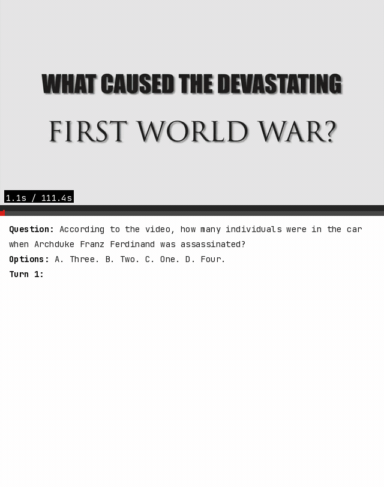
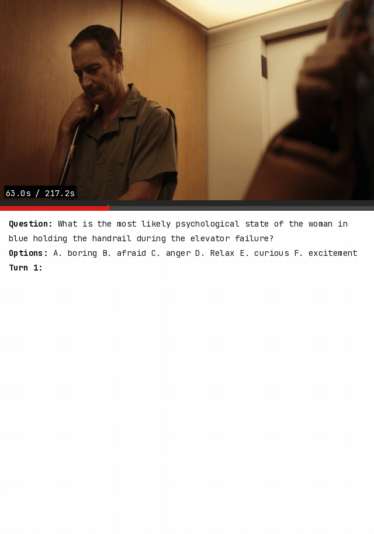
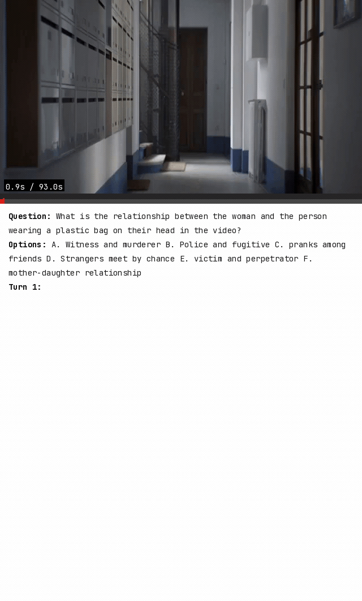
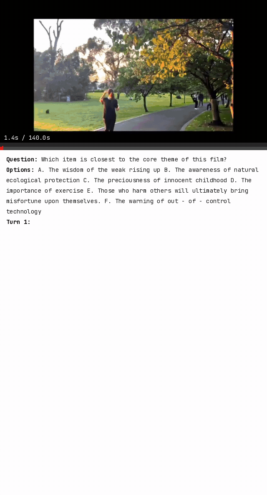
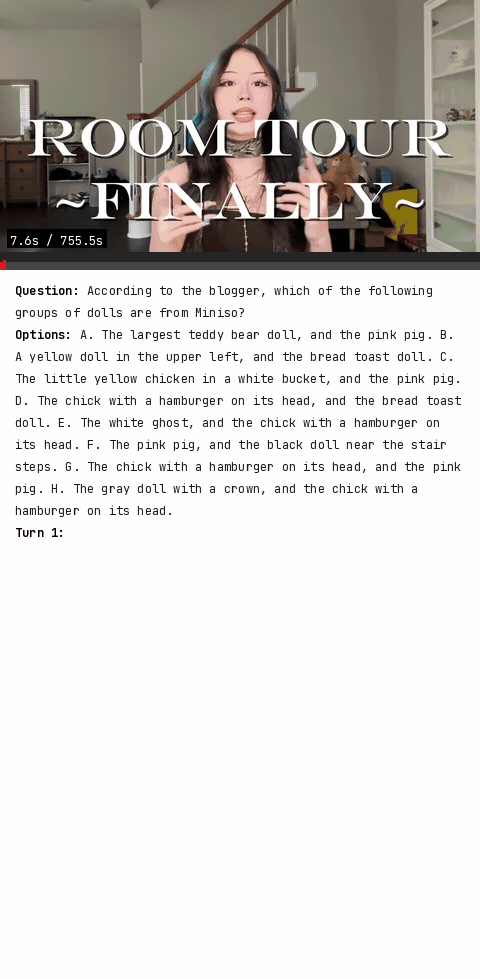
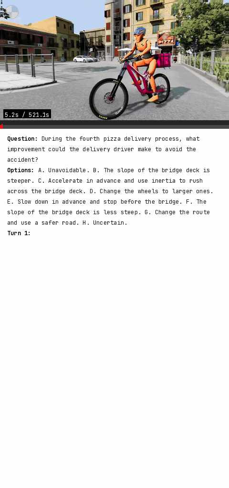
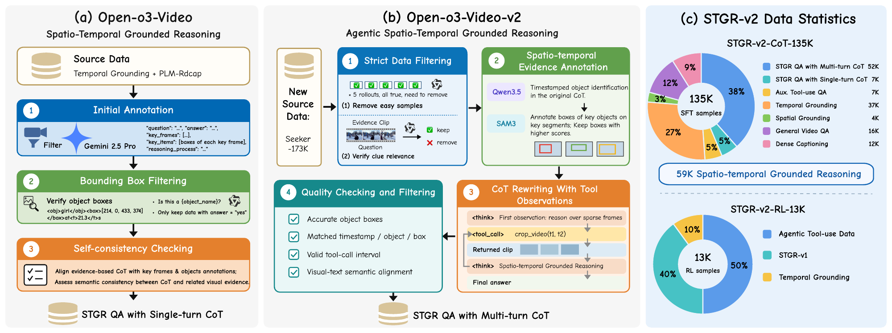
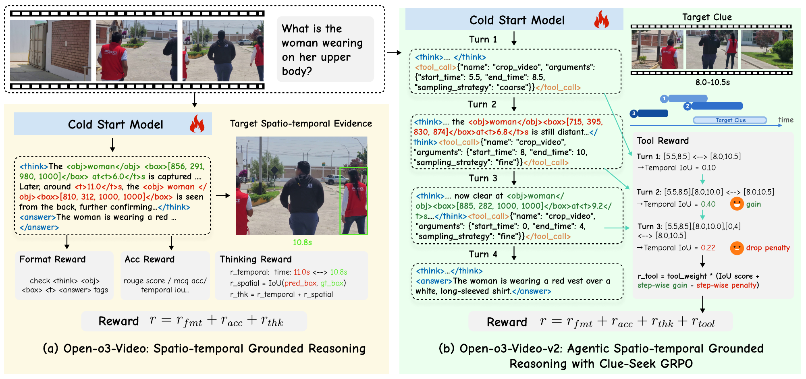

Reliable video reasoning requires models to produce correct answers and expose supporting visual evidence. Open-o3-Video enables verifiable reasoning by embedding timestamps and object-level bounding boxes into reasoning traces, but is restricted to frames from an initial sparse sampler. We introduce Open-o3-Video-v2, which formulates video reasoning as a unified agentic evidence-grounded process. The model identifies missing information, acquires additional observations, grounds the moments and objects supporting its reasoning, and writes this evidence into the trajectory before continuing or answering. To support this behavior, we construct STGR-v2-CoT-135K, including 52K multi-turn agentic grounded reasoning trajectories, and STGR-v2-RL-13K for reinforcement learning. We further propose Clue-Seek GRPO (CS-GRPO), which tracks how tool calls change accumulated evidence, rewards clue coverage and step-wise gains, and penalizes excessive, repetitive, or uninformative retrieval. On V-STaR, Open-o3-Video-v2-4B achieves 40.4% mAM and 56.3% mLGM. It also delivers consistent gains across general video understanding, long-video reasoning, and temporal grounding benchmarks. These results show that active evidence acquisition and verifiable object-level grounding are complementary for reliable video reasoning.







The 52K multi-turn grounded QA trajectories are built in four steps:
Training corpora: STGR-v2-CoT-135K combines these 52K trajectories with single-turn grounded QA, auxiliary tool-use, temporal and spatial grounding, general video QA, and dense captions. STGR-v2-RL-13K retains questions with both correct and incorrect sampled rollouts, giving reinforcement learning informative comparisons.

Stage 1 — SFT: Train on STGR-v2-CoT-135K in a conversation format that interleaves assistant reasoning, optional crop_video calls, returned frames, grounded evidence, and a final answer. Only assistant-generated tokens receive the next-token training loss.
Stage 2 — CS-GRPO: Optimize complete interaction trajectories on STGR-v2-RL-13K. For each call, CS-GRPO measures the temporal overlap between all clips retrieved so far and the annotated answer-relevant clue intervals. This accumulated evidence state captures both clue coverage and irrelevant footage.
@article{meng2026openo3v2,
title={Open-o3-Video-v2: Seek, Ground, and Reason with Verifiable Spatio-Temporal Evidence},
author={Meng, Jiahao and Bao, Zhongyuan and Tan, Yue and Wen, Haiquan and Zhang, Renrui and Wang, Anna and Li, Jason and Fu, Yanwei and Tong, Yunhai and Yang, Ming-Hsuan},
journal={arXiv preprint arXiv:2610.xxxxx},
year={2026}
}